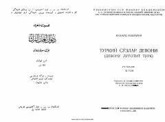

TSMahmud Koshg'ariyning 'Devonu lug'otit turk' asarining uchinchi jildi.
Ushbu nashr qomusiy olim Mahmud Koshg'ariyning mashhur 'Devonu lug'otit turk' asarining uchinchi jildi bo'lib, turkiy tillar leksikasi, grammatikasi va lahjalarini chuqur o'rganishga bag'ishlangan. Asarda XI asr turkiy xalqlarning tili, madaniyati va tarixi haqida qimmatli ma'lumotlar berilgan. Kitob tarjimon va nashrga tayyorlovchi S. M. Mutallibov tomonidan ilmiy izohlar bilan taqdim etilgan.